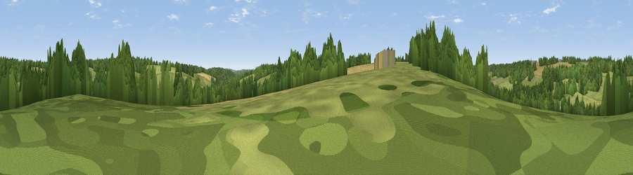

Viewpoint near Chenies
#45801 in England · top 94% of its area beats it · near CheniesWhere it is
The exact computed spot (TQ 02675 98625). Click the marker for map links.
The view, rendered

A 360° render of this exact spot computed from the terrain model, tree cover and land cover — summer colours, afternoon light, calibrated against photographs of famous viewpoints. Real trees, hedges and buildings will differ in detail.
The panorama
Grey silhouette: terrain skyline in each direction (720 bearings, Earth curvature and refraction included). Dashed green: skyline with trees (+15 m) and buildings (+8 m) as obstacles. Blue strip: how far the ground is visible on each bearing.
Where the view opens
Wedge length = distance to the farthest visible ground on that bearing (vegetation-aware). Rings at 10, 25 and 50 km.
What fills the view
62% grassland · 29% woodland · 8% cropland ·
Angular shares of the visible panorama (visual magnitude), not map area. Landscape diversity 0.39 (0–1 Shannon).
Key numbers
More beautiful places nearby
The staircase of upgrades: each row has a higher view potential than everything closer. Driving times are estimates from straight-line distance, calibrated against real road routing — check an actual route before setting out.
| Place | Direction | Drive | Score |
|---|---|---|---|
| Viewpoint near Sarratt | E · 1 km | ~3 min | 24.6 |
| Viewpoint near Chesham Bois | WNW · 6 km | ~13 min | 25.0 |
| Viewpoint near Hill End | SSE · 6 km | ~13 min | 29.1 |
| Batchworth Heath | SE · 8 km | ~16 min | 38.5 |
| Viewpoint near Coleshill | WSW · 8 km | ~16 min | 40.0 |
| Viewpoint near South Oxhey | SE · 10 km | ~20 min | 40.5 |
| Viewpoint near South Harefield | SSE · 12 km | ~22 min | 43.7 |
| Viewpoint near Loudwater | WSW · 14 km | ~25 min | 47.5 |
51.67702, -0.51645 · source: screening · position refined by local search. Computed location — check access rights before visiting.